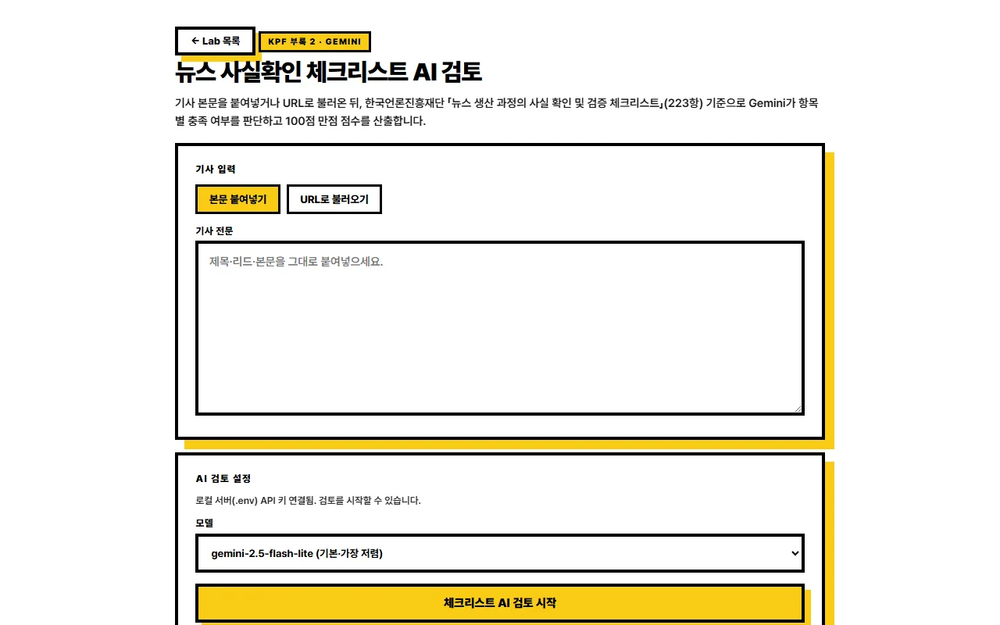
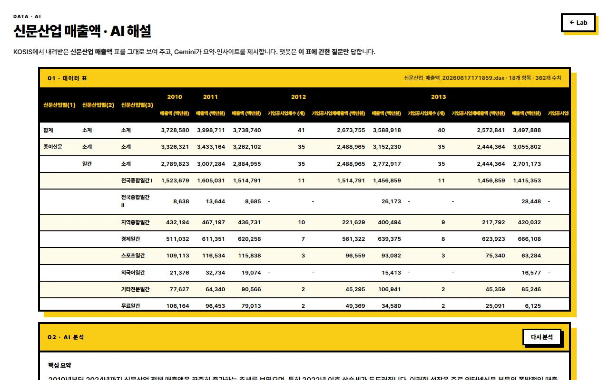
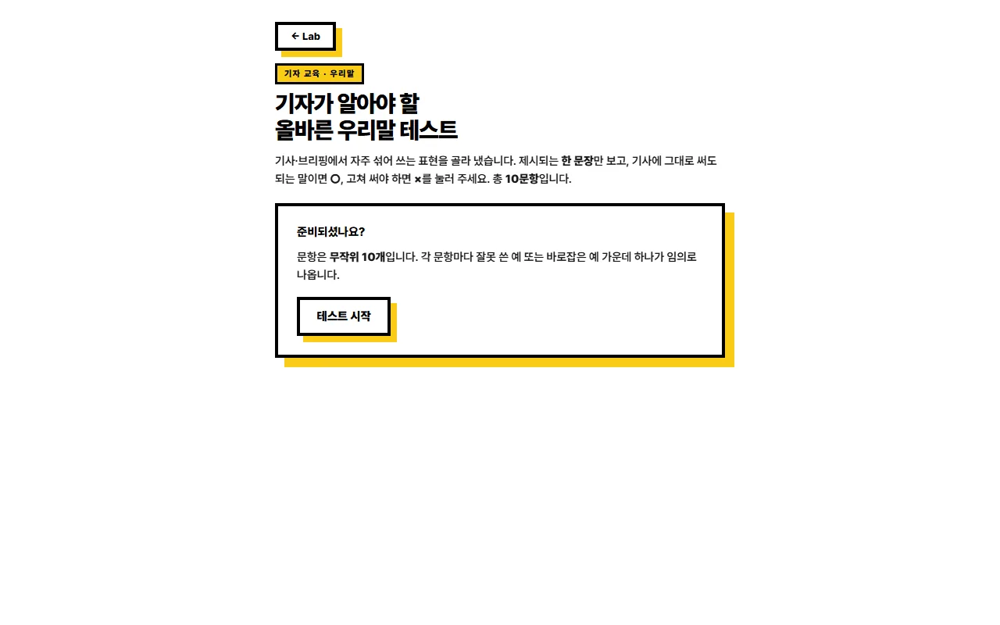
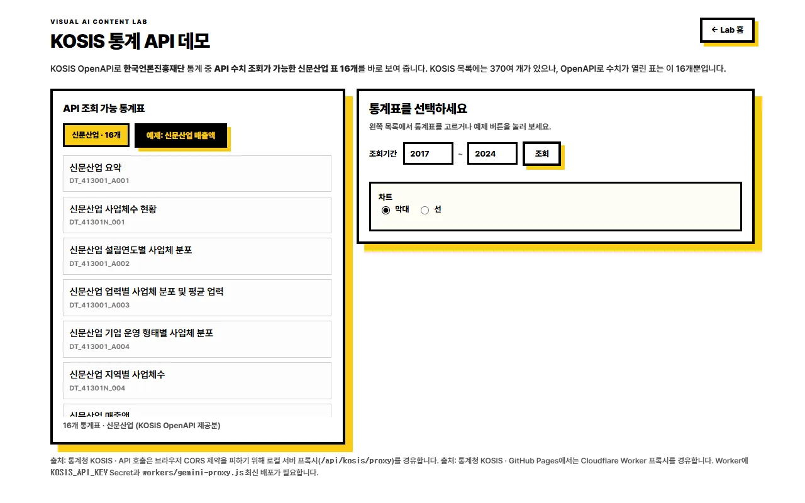
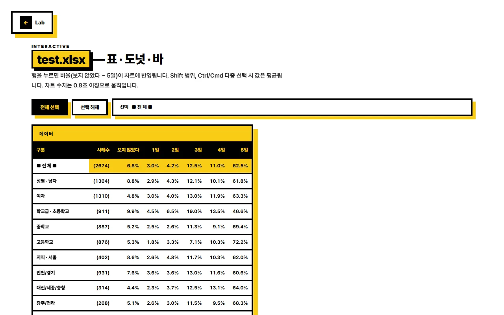
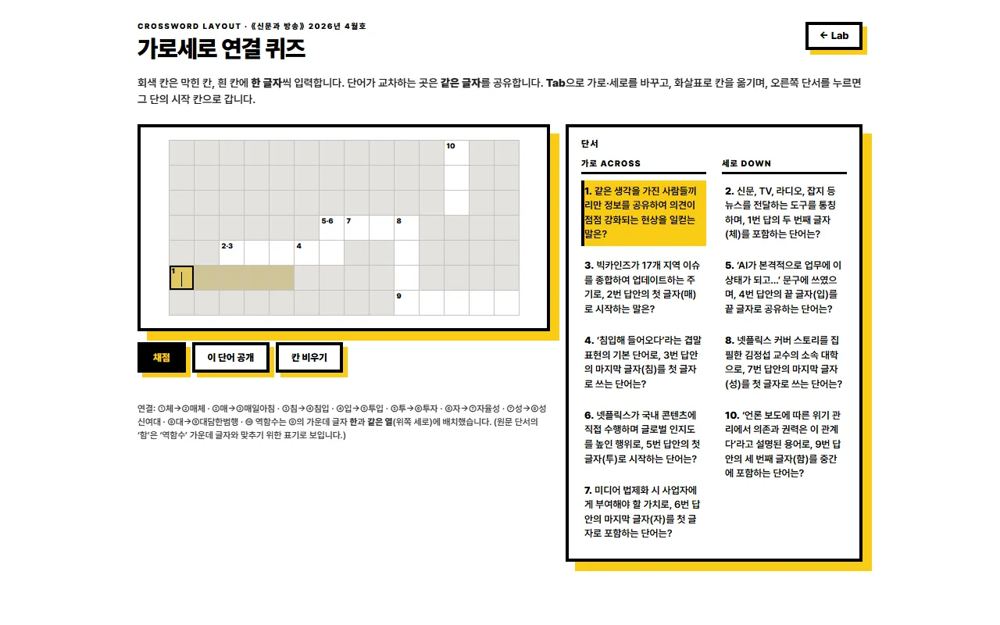
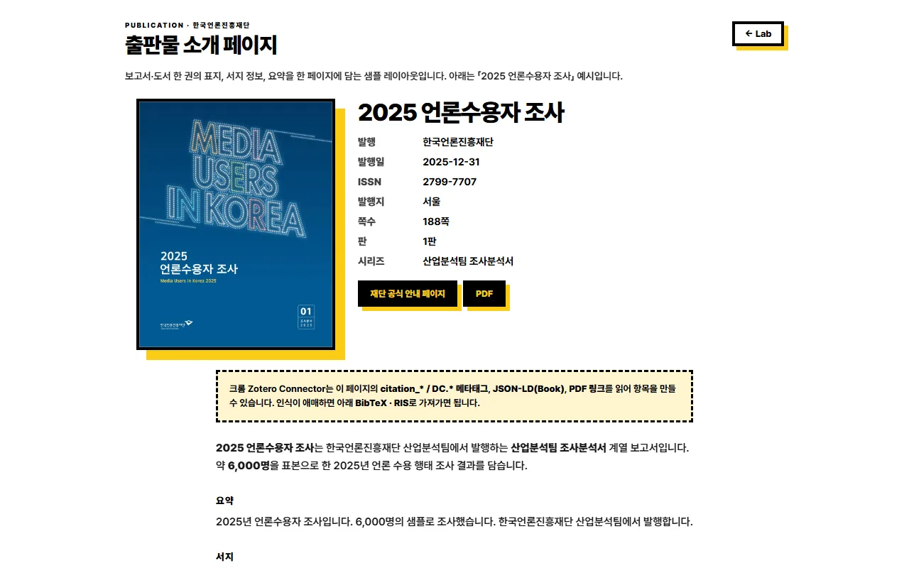
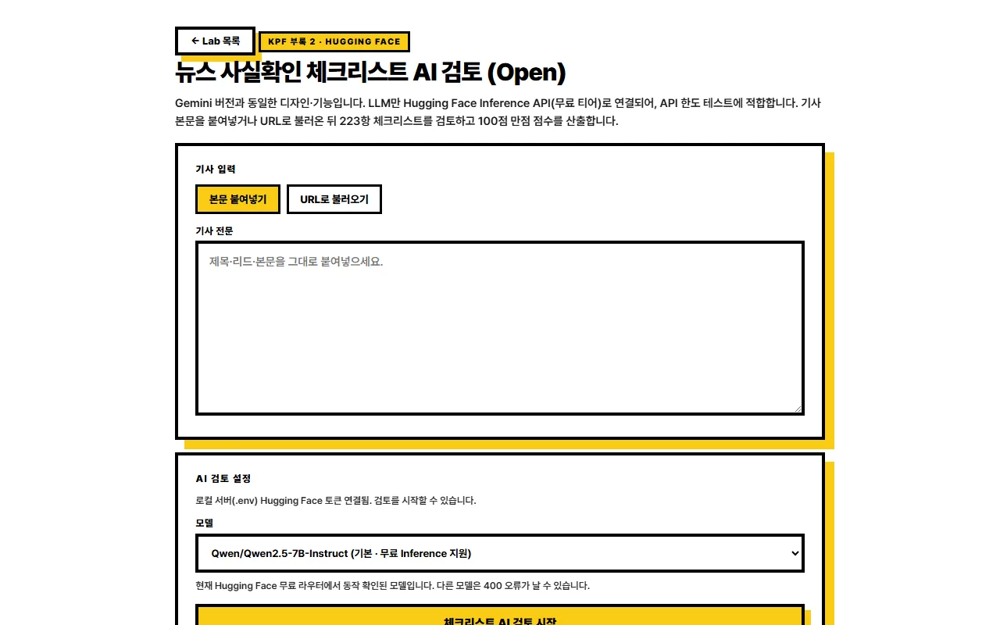

기사·보도자료·교육 현장에서 쓸 수 있는 비주얼·인터랙티브 콘텐츠 데모 모음입니다. 아래 항목을 눌러 바로 체험해 보세요.
총 8개

기사 원문을 붙여 넣으면 사실확인 항목별로 AI가 검토해 줍니다. 언론 윤리·팩트체크 교육용 데모입니다.

엑셀 통계 표를 보여 주고 Gemini가 요약·인사이트를 제시합니다. 챗봇은 표 내용에 관한 질문만 답합니다.

기사·브리핑에서 자주 헷갈리는 표현을 OX로 풀어 보는 10문항 퀴즈입니다. 교육·워크숍용으로 활용할 수 있습니다.

한국언론진흥재단 KOSIS 통계를 탐색하고, 선택한 표의 시계열 수치를 표·막대 차트로 확인합니다.

표에서 항목을 고르면 파이·막대 차트가 함께 바뀝니다. 수치를 독자에게 보여 줄 때 쓸 수 있는 형태의 예시입니다.

《신문과 방송》 기사를 바탕으로 만든 가로세로낱말 퀴즈입니다. 단서를 따라 키워드를 채워 넣어 봅니다.

간행물 소개 페이지에 표지·요약·서지를 담고, Zotero 등 서지정보 프로그램에 원클릭으로 항목을 추가할 수 있게 한 데모입니다.

위와 같은 기능을 누구나 바로 체험할 수 있는 공개 데모 버전입니다. 별도 가입 없이 사용해 볼 수 있습니다.
검색 결과가 없습니다. 다른 키워드로 다시 찾아 보세요.
Visual AI Content Lab · 한국언론진흥재단 산업분석실 콘텐츠 실험실